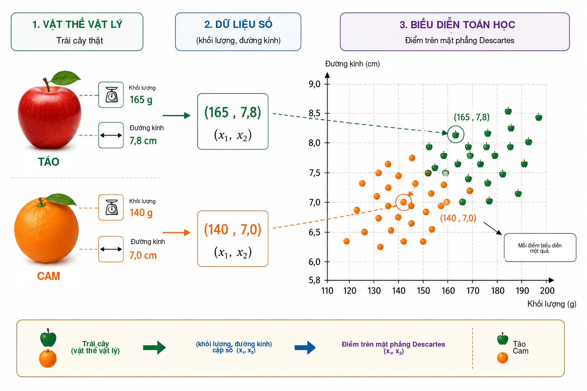
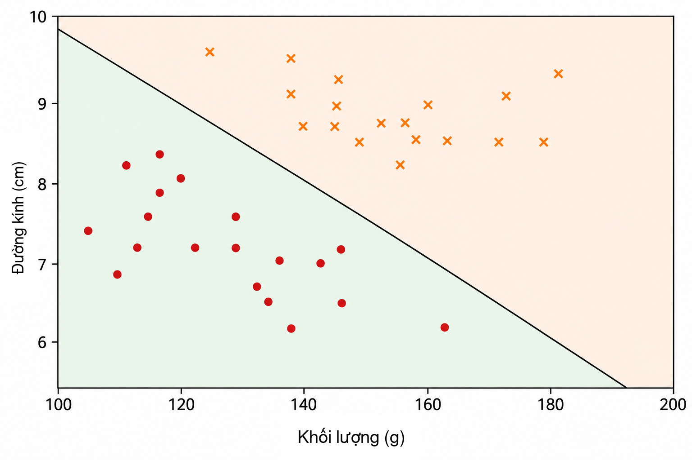
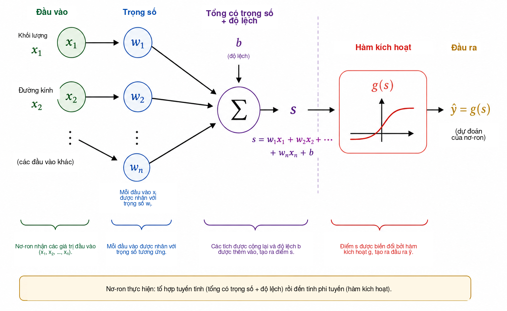
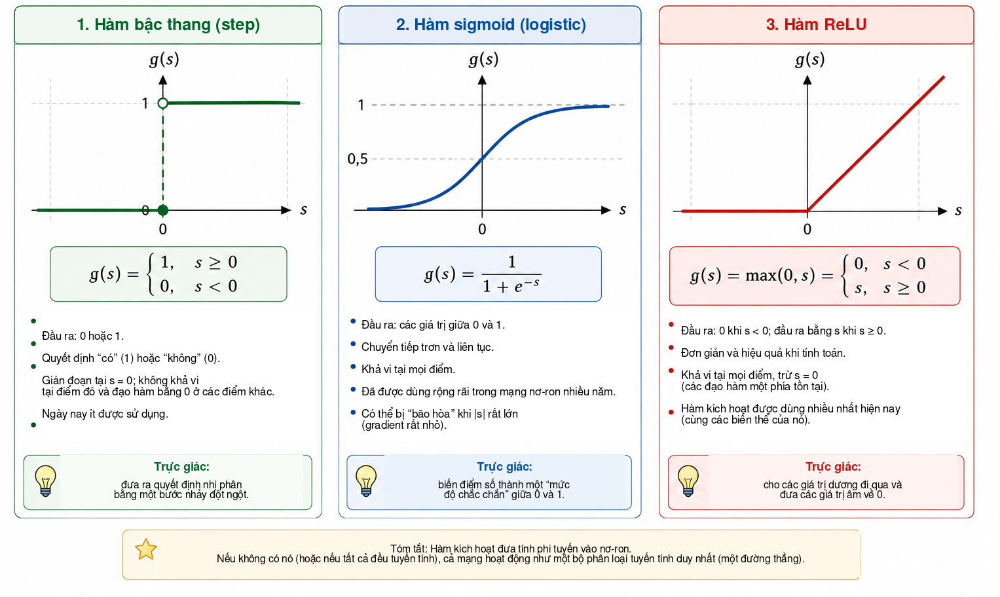
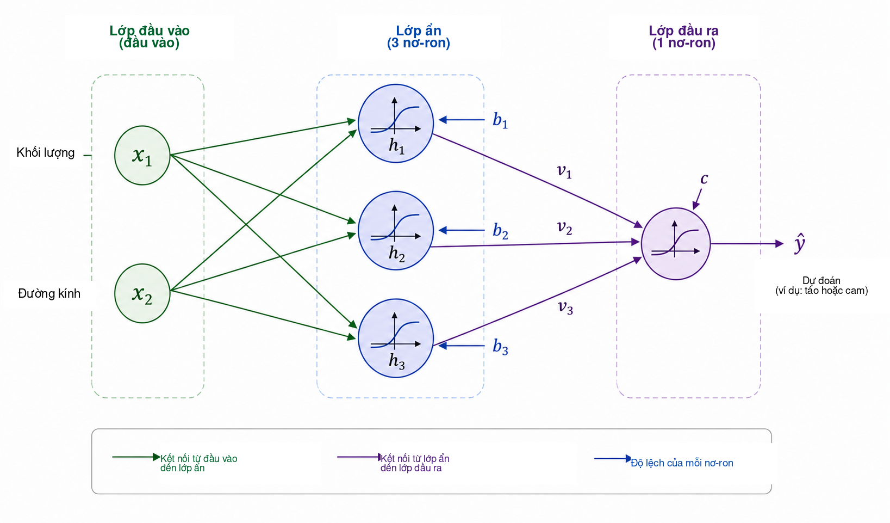
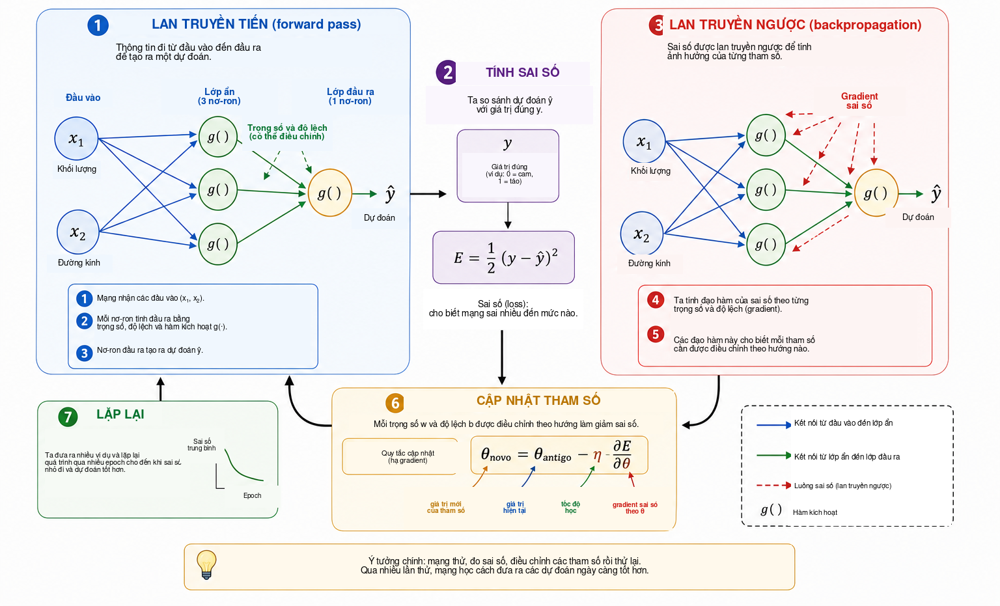
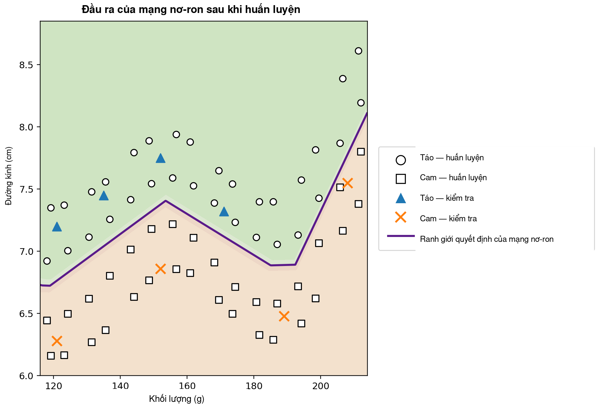

Khi nào máy tính có thể học?
Trong đời sống hằng ngày, chúng ta đưa ra các quyết định phân loại gần như không nhận ra. Nhìn một quả, ta nhanh chóng nhận biết đó là táo hay cam; khi một tin nhắn đến điện thoại, ta phân biệt cuộc trao đổi hợp lệ với quảng cáo không mong muốn; trong phân tích y khoa, nhiều phép đo có thể được kết hợp để hỗ trợ một quyết định; và tại các tổ chức tài chính, nhiều thông tin được đánh giá trước khi cấp tín dụng. Trong mọi ví dụ này, nhiều đặc trưng được xem xét đồng thời để tạo ra một câu trả lời.
Trong nhiều chương trình máy tính truyền thống, các quy tắc tạo ra câu trả lời được lập trình viên viết một cách tường minh. Cách tiếp cận này hoạt động tốt khi các quy tắc đã biết và có thể diễn đạt rõ ràng. Nó trở nên kém hiệu quả hơn khi dữ liệu biến thiên mạnh hoặc khi khó xác định trước mọi điều kiện cần thiết để đưa ra một quyết định tốt. Từ đây nảy sinh một câu hỏi tự nhiên:
Liệu ta có thể xây dựng một chương trình học quy tắc ra quyết định từ các ví dụ, thay vì phải được cung cấp sẵn các quy tắc đó hay không?
Đây là một trong những ý tưởng trung tâm của học máy, một lĩnh vực của trí tuệ nhân tạo nghiên cứu các phương pháp điều chỉnh mô hình dựa trên dữ liệu . Trong bài toán học có giám sát, thuật toán nhận các ví dụ kèm theo đáp án đúng, và ta tìm một mô hình cũng có khả năng đưa ra các dự đoán hữu ích cho những trường hợp không được dùng trong quá trình huấn luyện. Trong số nhiều mô hình được phát triển cho mục đích này, mạng nơ-ron nhân tạo trở nên quan trọng trong các ứng dụng như nhận dạng ảnh, xử lý ngôn ngữ, phân tích tín hiệu và dự báo chuỗi thời gian .
Việc sử dụng mạng nơ-ron như một cầu nối giữa toán học, tính toán và giáo dục phổ thông đã được Batista và Martins thảo luận trên Professor de Matemática Online, với các hoạt động liên quan đến đào tạo giáo viên, Python và nhận dạng chữ số. Bài báo này đi theo một hướng bổ sung. Mục tiêu chính của chúng tôi là làm rõ toán học bên trong một mạng nơ-ron nhỏ, bắt đầu từ hình học giải tích và tiến từng bước đến việc tính gradient và cài đặt lan truyền ngược bằng tay.
Mặc dù các ứng dụng hiện đại có vẻ rất tinh vi, cốt lõi toán học của mạng nơ-ron có thể được giới thiệu bằng những ý tưởng tương đối quen thuộc. Ở mức cơ bản, một mạng nơ-ron là hợp của các hàm có tham số được điều chỉnh từ dữ liệu. Ta bắt đầu với một bài toán hình học đơn giản, diễn giải lại một đường phân cách như một nơ-ron nhân tạo, nối nhiều nơ-ron với nhau, nghiên cứu vai trò của hàm kích hoạt và chỉ ra cách dùng đạo hàm để tự động điều chỉnh các tham số của mạng. Sau đó, ta cài đặt một ví dụ nhỏ hoàn chỉnh bằng Python, duy trì mối liên hệ trực tiếp giữa các phương trình và mã lệnh.
Biểu diễn bài toán bằng toán học
Để hiểu mạng nơ-ron hoạt động như thế nào, ta bắt đầu với một bài toán cố ý được đơn giản hóa: phân biệt táo với cam. Một quả có nhiều đặc trưng có thể hữu ích cho nhiệm vụ này, chẳng hạn màu sắc, khối lượng, đường kính, kết cấu và mùi. Tuy nhiên, mô hình toán học ban đầu không cần chứa toàn bộ sự phức tạp đó. Ta chỉ sử dụng hai đại lượng dễ đo: khối lượng, tính bằng gam, và đường kính, tính bằng xentimét.
Mỗi quả sẽ được biểu diễn bởi cặp có thứ tự \[(x_1,x_2),\] với \[x_1=\text{khối lượng} \qquad\text{và}\qquad x_2=\text{đường kính}.\]
Vì vậy, cặp \((155,\;7.2)\) biểu diễn một quả có khối lượng \(155\) g và đường kính \(7.2\) cm. Khi thay một vật thể vật lý bằng hai phép đo số, ta gắn mỗi quả với một điểm trên mặt phẳng Descartes: tọa độ thứ nhất biểu diễn khối lượng và tọa độ thứ hai biểu diễn đường kính. Hình 1 minh họa cách biểu diễn này cho một tập giả định gồm táo và cam.

Phép biến đổi này thay đổi cách ta nhìn bài toán. Thay vì hỏi trực tiếp làm thế nào để nhận biết táo hay cam, ta có thể đặt một câu hỏi hình học: làm thế nào để tách các điểm thuộc hai lớp trên mặt phẳng? Sự thay đổi góc nhìn này là nền tảng trong học máy. Ảnh, văn bản, âm thanh và tín hiệu thí nghiệm đều phải được chuyển thành biểu diễn số trước khi thuật toán có thể xử lý. Trong ví dụ của ta, mỗi đối tượng chỉ có hai tọa độ; trong các ứng dụng thực tế, một biểu diễn có thể chứa hàng trăm, hàng nghìn, thậm chí hàng triệu thành phần. Nguyên lý vẫn như nhau: mỗi ví dụ được gắn với một tập số, và mô hình tìm một quy tắc ánh xạ biểu diễn đó tới câu trả lời mong muốn.
Ta bắt đầu với quy tắc hình học đơn giản nhất và hỏi liệu một đường thẳng duy nhất có thể tách các điểm táo khỏi các điểm cam đủ tốt hay không.
Đường thẳng như một bộ phân loại
Sau khi mỗi quả được biểu diễn thành một điểm trên mặt phẳng Descartes, phân loại trở thành một bài toán hình học: liệu một đường thẳng có thể tách táo khỏi cam hay không? Câu hỏi này chứa đựng ý tưởng cơ bản của một họ phương pháp học máy quan trọng, gọi là bộ phân loại tuyến tính.
Xét một đường thẳng đi qua tập dữ liệu như trong Hình 2. Đường này chia mặt phẳng thành hai nửa mặt phẳng. Nếu phần lớn các điểm táo nằm ở một phía và phần lớn các điểm cam nằm ở phía kia, vị trí của một quả mới đối với đường thẳng có thể được dùng làm quy tắc phân loại. Sau khi đo khối lượng và đường kính, ta biểu diễn quả đó thành một điểm và xác định điểm nằm ở phía nào của đường thẳng.

Trên mặt phẳng Descartes \((x_1,x_2)\), một đường thẳng có thể được mô tả bởi \[w_1x_1+w_2x_2+b=0, \qquad (w_1,w_2)\neq(0,0).\]
Vectơ \((w_1,w_2)\) vuông góc với đường thẳng và do đó xác định hướng của nó, trong khi tham số \(b\) góp phần xác định vị trí. Biểu diễn này có một mức dư thừa nhỏ: nhân đồng thời \(w_1\), \(w_2\) và \(b\) với cùng một hằng số khác không tạo ra chính xác cùng một đường thẳng. Do đó, các tham số mô tả ranh giới không phải là duy nhất. Cách diễn giải số của chúng cũng phụ thuộc vào thang đo của các biến. Vì khối lượng được đo bằng gam và đường kính bằng xentimét, không nên so sánh trực tiếp độ lớn số của \(w_1\) và \(w_2\) mà không xét đến sự khác biệt về đơn vị.
Bản thân phương trình đường thẳng cung cấp một cách đơn giản để xác định một điểm nằm ở phía nào của ranh giới. Định nghĩa điểm số \[s(x_1,x_2)=w_1x_1+w_2x_2+b.\]
Nếu \(s(x_1,x_2)=0\), điểm nằm đúng trên đường thẳng. Nếu \(s(x_1,x_2)>0\), điểm nằm trong một nửa mặt phẳng; nếu \(s(x_1,x_2)<0\), điểm nằm trong nửa mặt phẳng kia. Nếu ta quy ước điểm số dương tương ứng với táo và điểm số âm tương ứng với cam, quy tắc trở thành \[\begin{cases} s(x_1,x_2)\geq 0 & \Longrightarrow \text{táo},\\ s(x_1,x_2)<0 & \Longrightarrow \text{cam}. \end{cases}\]
Ví dụ, xét ranh giới được xác định bởi \[w_1=\frac{1}{10}, \qquad w_2=2, \qquad b=-30.\] Với một quả có khối lượng \(160\) g và đường kính \(7.8\) cm, \[\begin{aligned} s &=\frac{1}{10}\times160+2\times7.8-30\\ &=16+15.6-30\\ &=1.6. \end{aligned}\] Vì điểm số dương, điểm nằm trong nửa mặt phẳng mà ta gắn với táo. Vì vậy bộ phân loại này sẽ gán nhãn quả đó là táo.
Không phải mọi lựa chọn của \(w_1\), \(w_2\) và \(b\) đều cho một phép phân loại tốt. Một số đường tách hai nhóm kém, trong khi những đường khác tạo ra ít sai sót hơn. Bài toán học chính là sử dụng các ví dụ đã gán nhãn để xác định các giá trị tham số làm giảm một thước đo sai số của mô hình. Thay vì lập trình trực tiếp vị trí của đường, ta muốn thuật toán điều chỉnh các hệ số dựa trên dữ liệu.
Một đường duy nhất có thể hoạt động tốt khi các lớp gần như phân tách tuyến tính. Những tập dữ liệu phức tạp hơn có thể đòi hỏi ranh giới phi tuyến. Trước khi bàn về giới hạn đó, ta diễn giải lại bộ phân loại vừa xây dựng như một đơn vị tính toán cơ bản: một nơ-ron nhân tạo.
Nơ-ron nhân tạo
Trong phần trước, biểu thức \[s=w_1x_1+w_2x_2+b\] được dùng để xác định một quả nằm ở phía nào của đường thẳng. Cùng biểu thức đó có thể được xem như bước đầu tiên của phép tính do một nơ-ron nhân tạo thực hiện. Một nơ-ron nhận các đầu vào số, kết hợp chúng bằng trọng số và độ lệch, rồi áp dụng một hàm toán học để thu được đầu ra.
Trong ví dụ của ta, các đầu vào là khối lượng \(x_1\) và đường kính \(x_2\). Mỗi đầu vào được nhân với một tham số gọi là trọng số; các tích được cộng với số hạng hằng \(b\), gọi là độ lệch (bias). Hình 3 minh họa sơ đồ phép tính này.

Các trọng số xác định cách những thay đổi ở đầu vào ảnh hưởng đến điểm số. Nếu giữ \(x_2\) và mọi đại lượng khác cố định, thay đổi \(\Delta x_1\) làm \(s\) thay đổi một lượng \(w_1\Delta x_1\). Tương tự, thay đổi \(\Delta x_2\) làm điểm số thay đổi \(w_2\Delta x_2\). Dấu của trọng số cũng quan trọng: trọng số dương khiến đầu vào tăng thì điểm số tăng, còn trọng số âm tạo hiệu ứng ngược lại. Cách diễn giải này cần thận trọng khi các biến có đơn vị và thang đo khác nhau. Vì lý do đó, các cài đặt thực tế thường chuẩn hóa hoặc tiêu chuẩn hóa dữ liệu đầu vào trước khi huấn luyện.
Độ lệch \(b\) là số hạng hằng trong phép biến đổi affine. Về hình học, độ lệch cho phép ranh giới quyết định dịch chuyển. Nếu \(b=0\), phương trình \[w_1x_1+w_2x_2=0\] buộc đường thẳng đi qua gốc tọa độ. Khi có độ lệch, ranh giới có thể chuyển sang vị trí khác. Tương đương, khi \(x_1=x_2=0\), điểm số đơn giản là \(s=b\).
Điểm số không nhất thiết phải là đầu ra cuối cùng của nơ-ron. Nói chung, một hàm kích hoạt \(g\) được áp dụng lên điểm số: \[\widehat{y}=g(s)=g\left(w_1x_1+w_2x_2+b\right).\] Do đó, phép tính có hai bước, \[\begin{aligned} s &= w_1x_1+w_2x_2+b,\\[4pt] \widehat{y} &= g(s). \end{aligned}\]
Với các giá trị tham số ở phần trước, ta thu được \(s=1.6\). Nếu chọn hàm bậc thang \[g(s)= \begin{cases} 1, & s\geq0,\\ 0, & s<0, \end{cases}\] thì \(\widehat{y}=g(1.6)=1\). Theo quy ước của ta, quả đó được phân loại là táo. Với hàm kích hoạt này, quyết định thay đổi khi \(s\) đi qua 0, nên ranh giới lớp chính xác được cho bởi \[w_1x_1+w_2x_2+b=0.\]
Vì vậy, một nơ-ron đơn lẻ là một đối tượng toán học đơn giản có các tham số có thể điều chỉnh. Ý nghĩa thực sự xuất hiện khi nhiều đơn vị như vậy được nối với nhau. Tuy nhiên, trước khi xây dựng mạng, ta cần hiểu vì sao hàm kích hoạt lại quan trọng đến vậy.
Tại sao cần hàm kích hoạt?
Một nơ-ron trước hết tính một điểm số thông qua phép biến đổi affine, rồi áp dụng hàm kích hoạt. Bước thứ hai này rất quan trọng để mạng nơ-ron có thể biểu diễn các quan hệ phức tạp. Để thấy lý do, hãy tưởng tượng một mạng không có hàm kích hoạt. Mỗi đơn vị sẽ có dạng \[y=w_1x_1+w_2x_2+b.\]
Để minh họa trong một chiều, giả sử đơn vị thứ nhất cho \[h=ax+b\] và đơn vị thứ hai tính \[y=ch+d.\] Thay vào ta được \[y=c(ax+b)+d=acx+(cb+d),\] vẫn là một hàm affine của \(x\). Điều tương tự đúng trong nhiều chiều: hợp của các phép biến đổi affine vẫn là một phép biến đổi affine. Vì thế, thêm nhiều lớp nhưng không có phép toán phi tuyến không làm mạng trở nên biểu đạt hơn về bản chất; toàn bộ phép hợp có thể được thay bằng một phép biến đổi affine duy nhất.
Hàm kích hoạt phá vỡ giới hạn này. Sau khi tính điểm số \(s\), nơ-ron áp dụng một ánh xạ thường là phi tuyến \[h=g(s).\] Khi nhiều đơn vị như vậy được nối với nhau, phép hợp thu được không còn có thể rút gọn thành một phép biến đổi affine duy nhất. Điều này cho phép mạng xây dựng những ranh giới quyết định phức tạp hơn.
Hàm kích hoạt đơn giản nhất là hàm bậc thang, \[g(s)= \begin{cases} 1, & s\geq0,\\ 0, & s<0. \end{cases}\] Hàm này tạo ra quyết định nhị phân và rất hữu ích để hiểu phân loại. Tuy nhiên, đạo hàm của nó bằng 0 khi \(s\neq0\) và không xác định tại \(s=0\). Vì huấn luyện dựa trên gradient dùng đạo hàm để xác định các tham số cần thay đổi như thế nào, hàm bậc thang không phù hợp với cơ chế huấn luyện đó.
Một lựa chọn thay thế là hàm sigmoid, \[\sigma(s)=\frac{1}{1+e^{-s}}.\] Hàm này ánh xạ mọi số thực vào một giá trị nằm nghiêm ngặt giữa \(0\) và \(1\). Với \(s\) rất âm, đầu ra tiến gần \(0\); với \(s\) rất dương, đầu ra tiến gần \(1\); giữa hai trạng thái này, chuyển tiếp diễn ra trơn tru. Sigmoid khả vi tại mọi điểm, với \[\sigma'(s)=\sigma(s)\bigl(1-\sigma(s)\bigr).\] Vì đầu ra nằm giữa \(0\) và \(1\), sigmoid thường được dùng ở lớp đầu ra của bộ phân loại nhị phân. Trong một mô hình xác suất với hàm mất mát phù hợp, đầu ra có thể được diễn giải như một ước lượng xác suất của lớp được biểu diễn bởi \(1\). Tuy nhiên, ở các lớp ẩn, sigmoid có thể gây khó khăn: với đầu vào có độ lớn lớn, đạo hàm trở nên rất nhỏ, góp phần gây ra hiện tượng gradient biến mất trong các mạng sâu.
Một hàm kích hoạt thường dùng ở lớp ẩn là ReLU (Rectified Linear Unit), \[\operatorname{ReLU}(s)=\max(0,s) = \begin{cases} 0, & s<0,\\ s, & s\geq0. \end{cases}\] Mặc dù được ghép từ hai đoạn tuyến tính, ReLU không tuyến tính trên toàn miền. Đạo hàm bằng \(0\) khi \(s<0\) và bằng \(1\) khi \(s>0\). Tại \(s=0\), đạo hàm thông thường không tồn tại và các cài đặt phần mềm dùng một quy ước cho gradient. Với đầu vào dương, đạo hàm không co nhỏ khi \(s\) tăng, nhờ đó tránh được một trong các cơ chế bão hòa của sigmoid.
Hình 4 so sánh trực quan ba hàm kích hoạt này: bước nhảy đột ngột của hàm bậc thang, chuyển tiếp trơn của sigmoid và sự thay đổi độ dốc của ReLU.

Các tính chất chính được tóm tắt dưới đây.
| Hàm | Đầu ra | Đạo hàm | Cách dùng phổ biến |
|---|---|---|---|
| Bậc thang | \(\{0,1\}\) | Bằng 0 với \(s\neq0\); không xác định tại \(s=0\) | Các mô hình lịch sử và ví dụ sư phạm |
| Sigmoid | \((0,1)\) | Tồn tại với mọi \(s\) | Lớp đầu ra trong phân loại nhị phân |
| ReLU | \([0,\infty)\) | \(0\) khi \(s<0\) và \(1\) khi \(s>0\) | Các lớp ẩn |
Chi tiết của ba hàm là khác nhau, nhưng chúng có cùng một vai trò khái niệm: đưa tính phi tuyến vào mô hình. Chính tính phi tuyến này cho phép mạng nhỏ ở phần tiếp theo biểu diễn các quan hệ mà một đường thẳng duy nhất không thể nắm bắt.
Đối với độc giả muốn đi xa hơn, Haykin trình bày một thảo luận kinh điển về mạng nơ-ron, trong khi Goodfellow, Bengio và Courville bàn về các hàm kích hoạt và việc huấn luyện mạng sâu trong một bối cảnh rộng hơn. Văn bản truy cập tự do của Nielsen đặc biệt dễ tiếp cận để phát triển trực giác về nơ-ron, hàm kích hoạt và quá trình học.
Xây dựng một mạng nơ-ron nhỏ
Bây giờ ta xét một mạng có hai đầu vào, một lớp ẩn gồm ba nơ-ron và một nơ-ron đầu ra. Các đầu vào vẫn là \[x_1=\text{khối lượng}, \qquad x_2=\text{đường kính},\] và cả hai được đưa vào mỗi nơ-ron ẩn, như minh họa trong Hình 5.

Giả sử các đầu ra của lớp ẩn là \(h_1\), \(h_2\) và \(h_3\). Mỗi nơ-ron nhận cùng hai đầu vào nhưng có các trọng số và độ lệch riêng: \[\begin{aligned} h_1&=g\left(w_{11}x_1+w_{12}x_2+b_1\right),\\[4pt] h_2&=g\left(w_{21}x_1+w_{22}x_2+b_2\right),\\[4pt] h_3&=g\left(w_{31}x_1+w_{32}x_2+b_3\right). \end{aligned}\]
Mặc dù ba nơ-ron nhận cùng khối lượng và đường kính, chúng có thể tạo ra các phản hồi khác nhau vì các tham số khác nhau. Trong quá trình huấn luyện, các tham số này được điều chỉnh để các kích hoạt trung gian trở nên hữu ích cho việc phân loại.
Ba đại lượng \(h_1\), \(h_2\) và \(h_3\) sau đó được truyền tới nơ-ron đầu ra, nơ-ron này tính \[s_{\mathrm{out}}=v_1h_1+v_2h_2+v_3h_3+c\] và tạo ra \[\widehat{y}=g_{\mathrm{out}}\left(s_{\mathrm{out}}\right).\] Đối với bài toán nhị phân của ta, đầu ra sigmoid được dùng: \[\widehat{y}=\sigma\left(v_1h_1+v_2h_2+v_3h_3+c\right), \qquad 0<\widehat{y}<1.\]
Với quy ước \(y=1\) cho táo và \(y=0\) cho cam, ngưỡng \(0.5\) cho quyết định lớp \[\widehat{y}\geq0.5 \Longrightarrow \text{táo}, \qquad \widehat{y}<0.5 \Longrightarrow \text{cam}.\] Do đó, các giá trị gần \(1\) gắn mạnh với táo, còn các giá trị gần \(0\) gắn với cam. Như đã lưu ý, diễn giải \(\widehat{y}\) theo nghĩa số như một xác suất đòi hỏi thêm các giả thiết về mô hình và quá trình huấn luyện. Với quy tắc phân loại dùng ở đây, chỉ cần xem \(\widehat{y}\) là đầu ra liên tục của mạng.
Đặc điểm chính của kiến trúc này là biểu diễn trung gian \[(x_1,x_2) \longrightarrow (h_1,h_2,h_3) \longrightarrow \widehat{y}.\] Mạng nhận hai đặc trưng và xây dựng ba đại lượng mới trước khi tạo ra câu trả lời cuối cùng. Các kích hoạt này không được chọn thủ công: giá trị của chúng phụ thuộc vào trọng số và độ lệch, vì thế thay đổi khi các tham số được huấn luyện.
Dù nhỏ, mạng này đã có mười ba tham số có thể điều chỉnh. Ba nơ-ron ẩn chứa \[3(2+1)=9\] tham số, và nơ-ron đầu ra thêm \[3+1=4.\] Do đó, \[9+4=13.\]
Phép đếm tương tự trở nên rõ hơn trong ký hiệu ma trận. Định nghĩa \[\mathbf{x}= \begin{bmatrix} x_1\\x_2 \end{bmatrix}, \qquad W^{(1)}= \begin{bmatrix} w_{11}&w_{12}\\ w_{21}&w_{22}\\ w_{31}&w_{32} \end{bmatrix}, \qquad \mathbf{b}^{(1)}= \begin{bmatrix} b_1\\b_2\\b_3 \end{bmatrix}.\] Khi đó lớp ẩn có thể được viết gọn là \[\mathbf{h}=g\left(W^{(1)}\mathbf{x}+\mathbf{b}^{(1)}\right),\] trong đó \(g\) tác động theo từng thành phần. Với đầu ra, \[\widehat{y} = \sigma\left(W^{(2)}\mathbf{h}+b^{(2)}\right),\] với \[W^{(2)}= \begin{bmatrix} v_1&v_2&v_3 \end{bmatrix}.\]
Ký hiệu này báo trước cấu trúc sẽ xuất hiện trong chương trình Python. Khi một quả được đưa vào đầu vào và ta tính lần lượt các kích hoạt cho đến khi thu được \(\widehat{y}\), ta thực hiện lan truyền tiến hay forward pass. Câu hỏi chính vẫn như cũ: làm thế nào để tự động xác định mười ba tham số sao cho các dự đoán phù hợp với dữ liệu?
Mạng nơ-ron học như thế nào?
Các trọng số và độ lệch không được biết trước. Chúng phải được điều chỉnh bằng các ví dụ có đáp án đúng. Quá trình này được gọi là huấn luyện và có thể được tóm tắt bằng chu trình \[\boxed{\text{đưa ra dự đoán}} \longrightarrow \boxed{\text{đo sai số}} \longrightarrow \boxed{\text{điều chỉnh tham số}} \longrightarrow \boxed{\text{lặp lại}}.\]
Xét một quả có khối lượng \(140\) g và đường kính \(7.0\) cm, lớp đúng là cam, nên \(y=0\). Giả sử tại một giai đoạn huấn luyện nào đó mạng tạo ra \(\widehat{y}=0.80\). Một thước đo đơn giản cho độ không khớp giữa dự đoán và mục tiêu là sai số bình phương \[E=\frac{1}{2}\left(y-\widehat{y}\right)^2.\] Với ví dụ này, \[E=\frac{1}{2}(0-0.80)^2=0.32.\]
Biểu thức này là một hàm sai số cho một ví dụ. Vì là bình phương nên \(E\geq0\), và các dự đoán xa mục tiêu hơn bị phạt nhiều hơn. Hệ số \(1/2\) không làm thay đổi vị trí cực tiểu nhưng đơn giản hóa đạo hàm. Phân loại nhị phân thường dùng các hàm mất mát khác, đặc biệt là entropy chéo. Ở đây ta dùng sai số bình phương vì đại số của nó minh bạch và đủ để giới thiệu tối ưu hóa và lan truyền ngược .
Nếu tập huấn luyện chứa \(N\) ví dụ, một thước đo toàn cục là sai số trung bình \[J=\frac{1}{N}\sum_{i=1}^{N}E_i.\] Mỗi dự đoán phụ thuộc vào các trọng số và độ lệch của mạng, nên \(J\) cũng phụ thuộc vào tất cả các tham số này. Huấn luyện nghĩa là tìm các giá trị tham số làm cho \(J\) nhỏ.
Để hiểu cơ chế điều chỉnh, trước hết hãy tưởng tượng tất cả các tham số trừ một trọng số \(w\) được giữ cố định. Ta có thể xem sai số là một hàm \(J=J(w)\). Hình 6 tóm tắt các bước cơ bản của quá trình huấn luyện mà ta sẽ thảo luận.

Với độc giả chưa học nhiều giải tích, ở đây đạo hàm có thể được hiểu như một thước đo độ nhạy cục bộ: đạo hàm cho biết một thay đổi nhỏ của một tham số có xu hướng làm sai số thay đổi như thế nào. Dấu của nó chỉ hướng làm hàm tăng hoặc giảm cục bộ, còn độ lớn đo cường độ của sự thay đổi cục bộ đó.
Đạo hàm \[\frac{\partial J}{\partial w}\] cho biết độ dốc cục bộ. Nếu giá trị dương, tăng nhỏ \(w\) có xu hướng làm \(J\) tăng, nên trọng số phải dịch theo hướng ngược lại. Nếu giá trị âm, tăng \(w\) có xu hướng làm \(J\) giảm cục bộ. Cả hai trường hợp được biểu diễn bởi \[w_{\mathrm{new}} = w_{\mathrm{old}} - \eta\frac{\partial J}{\partial w},\] là ý tưởng cơ bản của hạ gradient. Số dương \(\eta\) là tốc độ học; nó điều khiển kích thước bước. Một giá trị quá nhỏ có thể làm huấn luyện chậm, còn một giá trị quá lớn có thể gây dao động hoặc mất ổn định.
Với một mạng có nhiều tham số, hãy để \(\theta\) biểu diễn một trọng số hoặc độ lệch bất kỳ. Cập nhật trở thành \[\theta_{\mathrm{new}} = \theta_{\mathrm{old}} - \eta\frac{\partial J}{\partial\theta}.\] Tập hợp tất cả các đạo hàm riêng tạo thành gradient của sai số. Về hình học, gradient chỉ hướng tăng cục bộ nhanh nhất, nên gradient âm cung cấp một hướng cục bộ để giảm.
Ta vẫn cần tính các đạo hàm này khi mạng là hợp của nhiều hàm. Trong lan truyền tiến, thông tin di chuyển như \[\text{đầu vào} \longrightarrow \text{lớp ẩn} \longrightarrow \text{đầu ra}.\] Để xác định một tham số ở lớp đầu ảnh hưởng đến sai số như thế nào, về mặt toán học ta đi theo chuỗi phụ thuộc theo hướng ngược lại. Thủ tục này được gọi là lan truyền ngược. Về bản chất, lan truyền ngược là việc áp dụng quy tắc dây chuyền một cách có hệ thống và hiệu quả. Rumelhart, Hinton và Williams là tài liệu kinh điển về việc phổ biến thủ tục này cho các mạng có lớp ẩn; Nielsen đưa ra một phép suy dẫn chi tiết và rất sư phạm.
Với một chuỗi phụ thuộc đơn giản trong đó \(E\) phụ thuộc vào \(\widehat{y}\), \(\widehat{y}\) phụ thuộc vào kích hoạt \(h\), và \(h\) lại phụ thuộc vào trọng số \(w\), quy tắc dây chuyền cho \[\frac{\partial E}{\partial w} = \frac{\partial E}{\partial\widehat{y}} \, \frac{\partial\widehat{y}}{\partial h} \, \frac{\partial h}{\partial w}.\] Mỗi thừa số mô tả một bước trong ảnh hưởng của \(w\) lên sai số cuối cùng. Mạng lớn hơn có nhiều chuỗi như vậy, và lan truyền ngược tổ chức phép tính sao cho các đạo hàm trung gian có thể được tái sử dụng thay vì tính lại riêng cho từng tham số.
Trong thực hành, huấn luyện sử dụng nhiều ví dụ. Một lượt đầy đủ qua tập huấn luyện được gọi là một epoch. Các tham số có thể được cập nhật sau mỗi ví dụ, như trong chương trình sư phạm dùng ở phần sau của bài báo, hoặc sau các nhóm nhỏ ví dụ gọi là mini-batch, thường dùng trong các mạng lớn hơn. Trong cả hai trường hợp, chu trình dự đoán, sai số, gradient và cập nhật được lặp lại qua nhiều epoch.
Một cách cụ thể để hình dung sự tiến triển này là theo dõi dự đoán cho một ví dụ cố định tại các giai đoạn khác nhau của quá trình huấn luyện. Xét lại quả có khối lượng \(140\) g và đường kính \(7.0\) cm, lớp đúng là cam. Bảng 1 cho thấy một diễn tiến giả định. Các giá trị này không đến từ một lần chạy cụ thể; chúng chỉ minh họa cơ chế.
| Epoch | Dự đoán \(\widehat{y}\) | Sai số \(E\) | Phân loại |
|---|---|---|---|
| 1 | 0.86 | 0.37 | Táo |
| 5 | 0.71 | 0.25 | Táo |
| 10 | 0.55 | 0.15 | Táo |
| 20 | 0.31 | 0.05 | Cam |
| 40 | 0.09 | 0.004 | Cam |
Ban đầu, đầu ra gần \(1\) và quả bị phân loại sai là táo. Khi các tham số được điều chỉnh, dự đoán giảm và cuối cùng đi qua ngưỡng \(0.5\), từ đó cho ra lớp đúng. Điều thay đổi trong quá trình này là các giá trị số của trọng số và độ lệch; kiến trúc mạng vẫn giữ nguyên.
Giảm sai số trên dữ liệu huấn luyện không phải là mục tiêu cuối cùng. Một mạng hữu ích cũng phải đưa ra dự đoán tốt cho các ví dụ không được dùng để điều chỉnh tham số. Khả năng này được gọi là khái quát hóa. Khi mô hình khớp quá sát với những đặc thù của tập huấn luyện và hoạt động kém hơn trên dữ liệu mới, xảy ra quá khớp (overfitting). Trong đánh giá cẩn thận hơn, dữ liệu thường được chia thành các tập huấn luyện, kiểm định và kiểm tra: tập thứ nhất dùng để điều chỉnh tham số, tập thứ hai hỗ trợ các lựa chọn trong quá trình phát triển mô hình, và tập thứ ba được giữ lại cho đánh giá cuối cùng. Có thể xem thảo luận rộng hơn về khái quát hóa và đánh giá mô hình trong Faceli et al. và Goodfellow, Bengio, Courville .
Như vậy ta đã đạt tới ý nghĩa toán học của việc học trong mạng nơ-ron. Trong ngữ cảnh này, học nghĩa là điều chỉnh các tham số của một hàm hợp để giảm một thước đo sai số trên dữ liệu và, lý tưởng nhất, khái quát hóa sang các ví dụ mới. Mạng tạo dự đoán, tính sai số, dùng đạo hàm để xác định các tham số ảnh hưởng tới sai số như thế nào, rồi thực hiện một chuỗi các hiệu chỉnh nhỏ.
Từ toán học đến Python
Bây giờ ta chuyển từ các phương trình sang một chương trình có thể chạy được. Mục tiêu không phải sử dụng một thư viện mạng nơ-ron chuyên dụng, mà là cài đặt trực tiếp bằng NumPy các phép toán toán học đã phát triển xuyên suốt bài báo . Nhờ đó, ta có thể thấy từng dòng một cách các tổ hợp tuyến tính, hàm kích hoạt, phép tính sai số, lan truyền ngược và hạ gradient xuất hiện trong mã.
Để ví dụ cuối cùng thuyết phục hơn, ta dùng một tập dữ liệu tổng hợp được phân bố trên miền khối lượng–đường kính rộng hơn. Ta vẫn chỉ dùng hai đặc trưng vật lý — khối lượng tính bằng gam và đường kính tính bằng xentimét — nhưng giờ phân bố \(64\) ví dụ huấn luyện trên một vùng rộng của mặt phẳng và dành riêng tám ví dụ bổ sung để kiểm tra minh họa. Dữ liệu vẫn là tổng hợp và nằm trong các khoảng hợp lý đối với táo và cam. Dữ liệu được xây dựng để tạo một ranh giới quyết định phi tuyến mà không tập trung tất cả các điểm vào một vài cụm quá nhân tạo.
Ý tưởng hình học rất đơn giản. Ta định nghĩa một đường cong tham chiếu trên mặt phẳng khối lượng–đường kính, đặt táo trong hai dải phía trên đường cong đó và đặt cam trong hai dải phía dưới. Các nhiễu xác định nhỏ được thêm vào khối lượng và đường kính để các quan sát chiếm một vùng rộng hơn. Ví dụ thu được phong phú hơn minh họa trước: có nhiều điểm hơn, dữ liệu trải rộng trên miền và ranh giới quyết định thích hợp rõ ràng cong hơn một đường thẳng.
Trong thí nghiệm tính toán cuối cùng này, ta mở rộng lớp ẩn lên mười hai nơ-ron ReLU. Điều này không thay đổi cấu trúc khái niệm đã học ở phần trước; nó chỉ tăng khả năng của mạng trong việc biểu diễn ranh giới phức tạp hơn. Thay vì \(13\) tham số trong mạng sư phạm ba nơ-ron, giờ có \(49\) tham số có thể điều chỉnh: \(24\) trọng số và \(12\) độ lệch ở lớp thứ nhất, tiếp theo là \(12\) trọng số và một độ lệch ở lớp đầu ra. Các phương trình giữ nguyên chính xác cùng dạng; chỉ các vectơ và ma trận lớn hơn.
Chương trình đầy đủ được trình bày dưới đây.
import numpy as np
import matplotlib.pyplot as plt
from matplotlib.lines import Line2D
def relu(s):
return np.maximum(0, s)
def relu_derivative(s):
return (s > 0).astype(float)
def sigmoid(s):
return 1 / (1 + np.exp(-s))
def base_boundary(m):
return 6.68 + 0.74*np.exp(-((m-155)/20)**2) \
+ 1.50/(1 + np.exp(-(m-202)/5))
def build_data():
masses_1 = np.linspace(118, 212, 16)
masses_2 = masses_1 + np.array([
1.2,-1.1,0.8,-1.3,1.0,-0.8,1.1,-1.0,
1.3,-0.9,0.9,-1.2,1.0,-1.0,0.8,-0.7
])
k = np.arange(16)
a1 = np.column_stack([
masses_1,
base_boundary(masses_1) + 0.22 + 0.05*np.sin(0.8*k)
])
a2 = np.column_stack([
masses_2,
base_boundary(masses_2) + 0.58 + 0.06*np.cos(0.45*k)
])
o1 = np.column_stack([
masses_1,
base_boundary(masses_1) - (0.22 + 0.04*np.cos(0.7*k))
])
o2 = np.column_stack([
masses_2,
base_boundary(masses_2) - (0.55 + 0.05*np.sin(0.5*k))
])
X_train = np.vstack([a1, a2, o1, o2])
y_train = np.array([1.0]*32 + [0.0]*32)
X_test = np.array([
[121.0, 7.20], [135.0, 7.45],
[152.0, 7.75], [171.0, 7.32],
[121.0, 6.28], [152.0, 6.86],
[189.0, 6.48], [208.0, 7.55]
])
y_test = np.array([1,1,1,1,0,0,0,0], dtype=float)
return X_train, y_train, X_test, y_test
def predict(X, mean, std, W1, b1, W2, b2):
Xn = (X - mean) / std
outputs = []
for x in Xn:
h = relu(W1 @ x + b1)
y_hat = sigmoid(W2 @ h + b2)
outputs.append(y_hat)
return np.array(outputs)
X_train, y_train, X_test, y_test = build_data()
mean = X_train.mean(axis=0)
std = X_train.std(axis=0)
Xn = (X_train - mean) / std
rng = np.random.default_rng(42)
W1 = 0.1 * rng.standard_normal((12, 2))
b1 = np.zeros(12)
W2 = 0.1 * rng.standard_normal(12)
b2 = 0.0
eta = 0.05
n_epochs = 6000
history = []
for epoch in range(n_epochs):
for i in rng.permutation(len(Xn)):
x = Xn[i]
target = y_train[i]
z1 = W1 @ x + b1
h = relu(z1)
z2 = W2 @ h + b2
y_hat = sigmoid(z2)
delta2 = (y_hat - target) * y_hat * (1 - y_hat)
dW2 = delta2 * h
db2 = delta2
delta1 = (delta2 * W2) * relu_derivative(z1)
dW1 = np.outer(delta1, x)
db1 = delta1
W1 -= eta * dW1
b1 -= eta * db1
W2 -= eta * dW2
b2 -= eta * db2
errors = []
for x, target in zip(Xn, y_train):
h = relu(W1 @ x + b1)
y_hat = sigmoid(W2 @ h + b2)
errors.append(0.5 * (target - y_hat)**2)
history.append(np.mean(errors))
def make_figure():
masses = np.linspace(116, 214, 500)
diameters = np.linspace(6.0, 8.85, 500)
M, D = np.meshgrid(masses, diameters)
grid = np.column_stack([M.ravel(), D.ravel()])
P = predict(grid, mean, std, W1, b1, W2, b2).reshape(M.shape)
fig, ax = plt.subplots(figsize=(9.2, 6.3))
ax.contourf(
M, D, P,
levels=[0.0, 0.25, 0.50, 0.75, 1.0],
colors=["#f3e0cb", "#ecd5c4", "#dbe7cf", "#cde3bf"],
alpha=0.95
)
ax.contour(M, D, P, levels=[0.5],
colors=["#5a1a8a"], linewidths=2.2)
mask = y_train == 1.0
ax.scatter(X_train[mask,0], X_train[mask,1], marker="o",
s=48, facecolors="white", edgecolors="black",
linewidths=1.1, label="T\u00e1o - hu\u1ea5n luy\u1ec7n")
mask = y_train == 0.0
ax.scatter(X_train[mask,0], X_train[mask,1], marker="s",
s=48, facecolors="white", edgecolors="black",
linewidths=1.1, label="Cam - hu\u1ea5n luy\u1ec7n")
mask = y_test == 1.0
ax.scatter(X_test[mask,0], X_test[mask,1], marker="^",
s=92, color="#1f77b4", label="T\u00e1o - ki\u1ec3m tra")
mask = y_test == 0.0
ax.scatter(X_test[mask,0], X_test[mask,1], marker="x",
s=110, color="#ff7f0e", linewidths=2.0,
label="Cam - ki\u1ec3m tra")
ax.set_xlabel("Kh\u1ed1i l\u01b0\u1ee3ng (g)")
ax.set_ylabel("\u0110\u01b0\u1eddng k\u00ednh (cm)")
ax.set_title("\u0110\u1ea7u ra c\u1ee7a m\u1ea1ng n\u01a1-ron sau khi hu\u1ea5n luy\u1ec7n")
handles = [
Line2D([0],[0], marker='o', markersize=9,
markerfacecolor='white', markeredgecolor='black',
linestyle='None', label='T\u00e1o - hu\u1ea5n luy\u1ec7n'),
Line2D([0],[0], marker='s', markersize=9,
markerfacecolor='white', markeredgecolor='black',
linestyle='None', label='Cam - hu\u1ea5n luy\u1ec7n'),
Line2D([0],[0], marker='^', markersize=9, color='#1f77b4',
linestyle='None', label='T\u00e1o - ki\u1ec3m tra'),
Line2D([0],[0], marker='x', markersize=10, color='#ff7f0e',
linestyle='None', label='Cam - ki\u1ec3m tra'),
Line2D([0],[0], color='#5a1a8a', lw=2.2,
label='Ranh gi\u1edbi quy\u1ebft \u0111\u1ecbnh c\u1ee7a m\u1ea1ng n\u01a1-ron')
]
ax.legend(handles=handles, loc='center left',
bbox_to_anchor=(1.02, 0.5), frameon=True)
fig.tight_layout()
plt.show()Mặc dù đoạn mã dài hơn các phương trình đầu tiên được nghiên cứu trong bài báo, cấu trúc của nó vẫn minh bạch. Hàm build_data() tự động tạo \(64\) ví dụ huấn luyện và tám ví dụ kiểm tra minh họa. Tiếp theo, ta tiêu chuẩn hóa hai biến theo \[x_j^{\ast}=\frac{x_j-\mu_j}{\sigma_j},\] với \(\mu_j\) và \(\sigma_j\) chỉ được tính từ tập huấn luyện. Điều này ngăn tập kiểm tra ảnh hưởng đến việc điều chỉnh tham số, đồng thời đặt khối lượng và đường kính trên các thang số có thể so sánh.
Lan truyền tiến về cơ bản không thay đổi. Khác biệt duy nhất là lớp thứ nhất giờ tạo ra một vectơ gồm mười hai kích hoạt ẩn. Trong ký hiệu ma trận, \[\mathbf{z}^{(1)}=W^{(1)}\mathbf{x}+\mathbf{b}^{(1)}, \qquad \mathbf{h}=\operatorname{ReLU}(\mathbf{z}^{(1)}),\] \[z^{(2)}=W^{(2)}\mathbf{h}+b^{(2)}, \qquad \widehat{y}=\sigma(z^{(2)}).\] Bốn dòng này vẫn chứa cốt lõi toán học của thuật toán. Việc huấn luyện cũng giữ nguyên logic đã giới thiệu trước đó: tính dự đoán, đo sai số, truyền thông tin độ nhạy ngược về sau bằng đạo hàm, rồi cập nhật các tham số bằng những bước hạ gradient nhỏ.
Trong mã, lan truyền ngược ở lớp đầu ra xuất hiện tại
delta2 = (y_hat - target) * y_hat * (1 - y_hat)và sự lan truyền tới lớp ẩn xuất hiện tại
delta1 = (delta2 * W2) * relu_derivative(z1)sau đó là các cập nhật cho mọi trọng số và độ lệch. Vì các ví dụ được xáo trộn ở mỗi epoch và các tham số được cập nhật sau mỗi quan sát, cài đặt này là một dạng cơ bản của hạ gradient ngẫu nhiên (stochastic gradient descent).
Với hạt giống ngẫu nhiên và các siêu tham số dùng ở đây, sai số trung bình cuối cùng nằm vào bậc \(10^{-5}\) đến \(10^{-4}\), và cả \(64\) ví dụ huấn luyện cùng tám ví dụ kiểm tra minh họa đều nhận phân loại như mong đợi. Điều này không nên được hiểu là một đánh giá nghiêm ngặt về hiệu năng thống kê: dữ liệu là tổng hợp và được xây dựng cho mục đích sư phạm. Vai trò của nó là chỉ ra, trong một tình huống không quá tầm thường, cách một mạng nơ-ron nhỏ có thể học một ranh giới quyết định rõ ràng phi tuyến.
Hình 7 cho thấy đầu ra cuối cùng của chương trình trên mặt phẳng khối lượng–đường kính. Tất cả các điểm huấn luyện đều được hiển thị. Đường cong nổi bật là mức \(\widehat{y}=0.5\) và biểu diễn ranh giới quyết định mà mạng đã học; các vùng tô màu cho thấy hai lớp dự đoán. Các hình tròn biểu diễn táo huấn luyện, hình vuông biểu diễn cam huấn luyện, tam giác biểu diễn táo kiểm tra và dấu chéo biểu diễn cam kiểm tra. Chú giải được đặt ngoài vùng chính của đồ thị để không che bất kỳ điểm dữ liệu nào.

Ta bắt đầu bằng một đường thẳng tách hai nhóm điểm đơn giản và kết thúc bằng một ví dụ tính toán phong phú hơn, trong đó một ranh giới cong xuất hiện từ việc tự động điều chỉnh các tham số của mạng. Không có điều bí ẩn nào được thêm vào toán học: cài đặt chỉ tổ chức và lặp lại, ở quy mô lớn hơn và tốc độ cao, các tổ hợp affine, hàm kích hoạt, đạo hàm, phép nhân ma trận và các cập nhật hạ gradient .
Toàn bộ tài liệu tính toán liên quan đến bài báo này — bao gồm mã và notebook Google Colab có thể chạy được — có tại https://neuralmath.org, cung cấp một điểm truy cập duy nhất cho độc giả muốn khám phá, tái tạo hoặc điều chỉnh các ví dụ.
Tuyên bố về việc sử dụng AI.
Tác giả đã sử dụng ChatGPT, do OpenAI phát triển, như một công cụ hỗ trợ soạn thảo, hiệu đính ngôn ngữ, tổ chức phần trình bày và tạo các hình minh họa sư phạm. Tác giả hoàn toàn chịu trách nhiệm về nội dung cuối cùng của công trình này, bao gồm việc hình thành và phát triển nội dung toán học, mã và các tài liệu tham khảo được sử dụng.